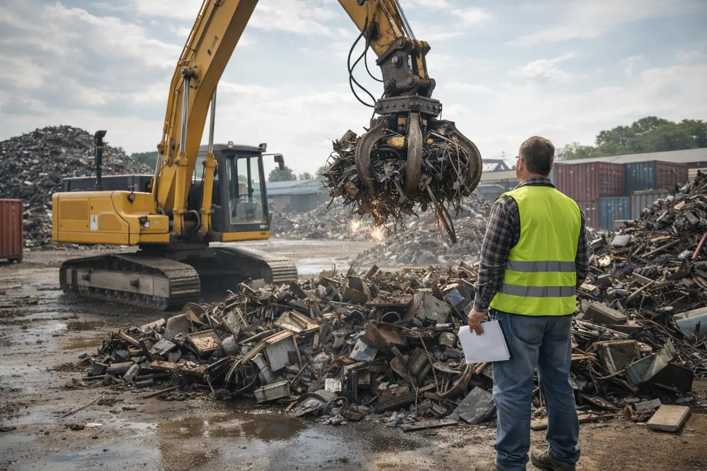
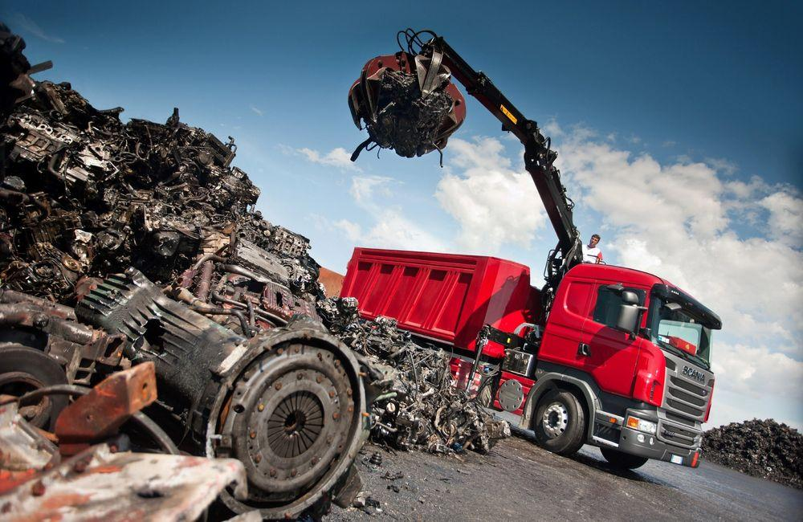
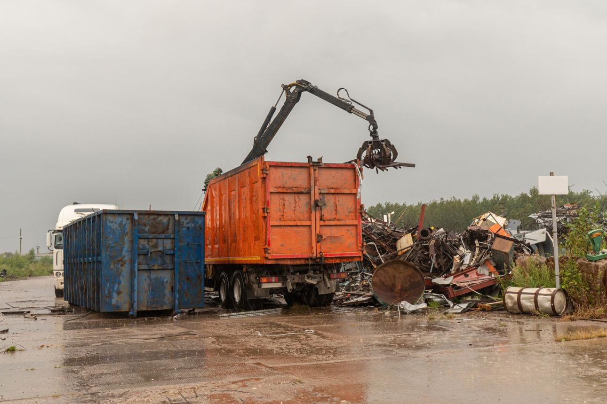
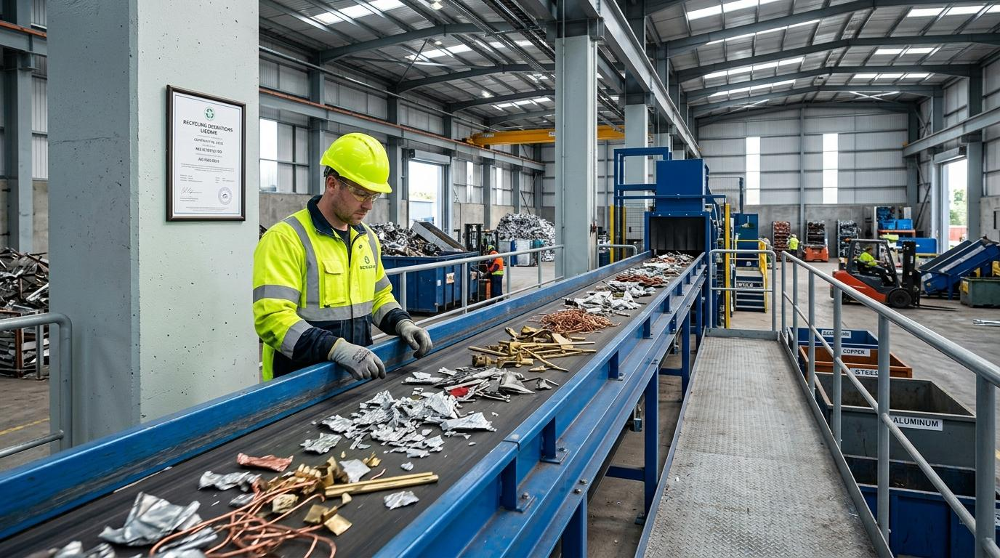
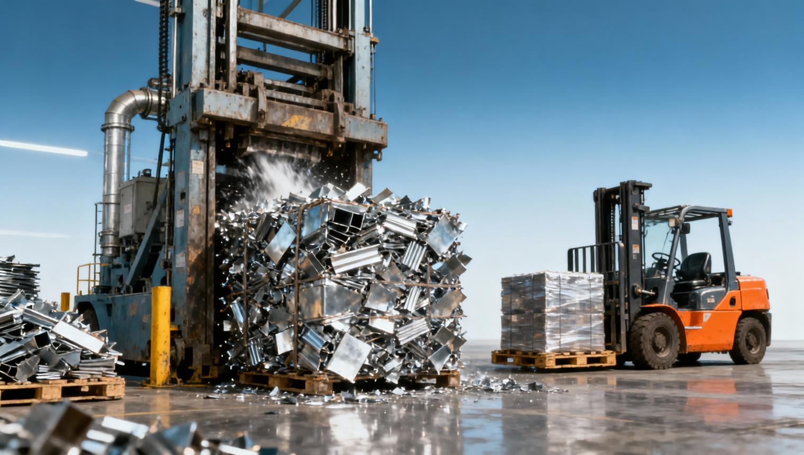

Our Recycling Process

01 – Enquiry
Submit material details, photos, and estimated tonnage online, by phone, or at our yard desk for a preliminary grade estimate.

02 – Material Inspection
Graders conduct radiation portal checks and handheld XRF alloy verification to classify exact metal grades.

03 – Collection and Transportation
Roll-off containers, hook-lift trucks, or grapple cranes haul loads safely from your facility to our yard.

04 – Accurate Weighing
Gross and tare weights are recorded on calibrated 80-ton drive-on weighbridges and certified platform scales.

05 – Sorting and Segregation
Conveyor lines, overhead magnets, and eddy-current separators isolate ferrous, copper, aluminium, and e-scrap streams.

06 – Processing
800-ton shears, hammermills, and twin-ram balers transform loose scrap into dense, furnace-ready mill feedstock.

07 – Final Settlement
Itemized weight & grade statements are issued with same-day bank transfer and environmental diversion certificates.